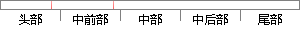
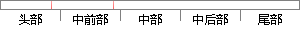

Antonakakis、P.
片段位置图

相似结果|
相似片段 1： Communications, IEEE, 6-12 May 2007: 321-329 [51] D. Dagon, M. Antonakakis, P. Vixie, et al. Increased
|
※ 片段修改建议 ※
近似词参考：
相似结果|
相似片段 1： Communications, IEEE, 6-12 May 2007: 321-329 [51] D. Dagon, M. Antonakakis, P. Vixie, et al. Increased
|
※ 片段修改建议 ※
近似词参考：